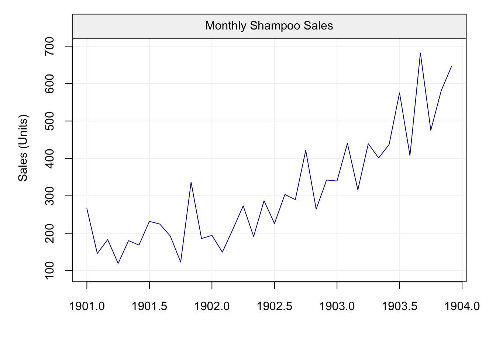
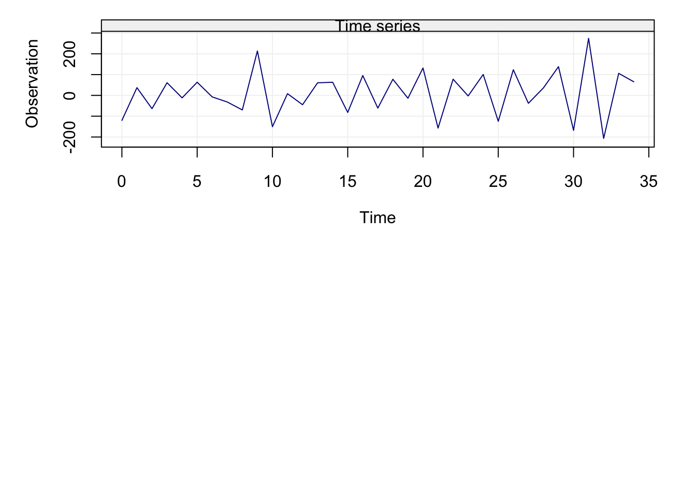

Chapter 1 ARIMA Models
As we saw in the introduction to this book (and in various sections throughout it), a time series can be made of two components: a deterministic (non-stationary) component and a stochastic component. The latter component has been the main focus of this book where different classes of time series models have been studied assuming that this stochastic component respects certain properties (i.e. stationarity). For the former component (i.e. the deterministic component) we assume that we are able to explain non-stationary behaviours such as trends and seasonality via regression-type methods which include time-related covariates.
However, there are non-stationary behaviours that can be addressed without the need for estimation procedures to make a time series stationary. In fact, estimating parameters to remove deterministic components in the data adds uncertainty when modelling the time-dependent stochastic component since the residuals from the previous fitting are only an approximation of the stochastic component and may be a biased representation of the time series if the model used to fit the deterministic component is misspecified. Considering the possible drawbacks when using regression techniques to explain the deterministic components, we have already seen a technique that can be used to remove non-stationary components without the need for regression and this was based on the use of the backshift operator \(B\). The latter consists in a \(d\)-order differencing defined as:
\[\delta^d X_t = (1 - B)^d X_t.\] We have already seen some examples where a first-order difference of a non-stationary time series can make the time series stationary. Indeed, a time series with a linear drift and/or a random walk can be made stationary by taking a first difference.
Example 1.1 For example, consider the model
\[X_t = \Delta + X_{t-1} + W_t,\] where \(\Delta\) is a drift constant and \(W_t \overset{iid}{\sim} WN(0, \sigma^2)\). A first difference of this process delivers:
\[\delta X_t = X_t - X_{t-1} = \Delta + W_t,\]
that is a stationary process with \(E[\delta X_t] = \Delta\) and \(Cov(\delta X_{t+h}, \delta X_t) = \sigma^2\) for \(h = 0\) and zero otherwise.A first-order difference can therefore remove linear trends in a time series but, if the non-stationary component of a time series has other behaviours, higher order differences can allow to make the series stationary.
Example 1.2 For example, take the following process:
\[X_t = \beta_0 + \beta_1 t + \beta_2 t^2 + Y_t,\] where \((Y_t)\) is a stationary time series. If we took the first difference of this time series we would obtain
\[\begin{align*} \delta X_t &= X_t - X_{t-1}\\ & = (\beta_0 + \beta_1 t + \beta_2 t^2 + Y_t) - (\beta_0 + \beta_1 (t-1) + \beta_2 (t-1)^2 + Y_{t-1}) \\ & = \beta_1 + \beta_2 (2t - 1) + \delta Y_t . \end{align*}\]This time series is not stationary either since its expectation depends on time. However, let us take the second difference:
\[\begin{align*} \delta^2 X_t &= \delta X_t - \delta X_{t-1}\\ & = (\beta_1 + \beta_2 (2t - 1) + \delta Y_t) - (\beta_1 + \beta_2 (2(t-1) - 1) + \delta Y_{t-1}) \\ & = \beta_2 2 + \delta^2 Y_t, \end{align*}\] which is now a stationary process with \(E[\delta^2 X_t] = 2 \beta_2\) and covariance function of \(\delta^2 Y_t\) which is a stationary process by definition.Therefore, if the time-dependent expectation of a time series can be explained by a \(d^{th}\)-order polynomial (i.e. \(\sum_{j=0}^d \beta_j t^j\)), the \(d^{th}\)-order difference of this time series will be stationary. There are many other non-stationary time series that can be made stationary in this manner (e.g. stochastic trend models).
Based on the properties of differencing, we can define the class of ARIMA(\(p\),\(d\),\(q\)) models as follows.
Based on this, the drift plus random walk described earlier would correspond to an ARIMA(0,1,0) since the first difference of the process delivers a white noise model with non-zero constant mean. To better illustrate the properties of these processes, let us consider the following ARIMA(2,1,1) model where \((X_t)\) is such that:
\[\delta X_t - 0.9 \delta X_{t-1} + 0.6 \delta X_{t-2} = 0.5 W_{t-1} + W_t.\] Below is a simulated realization of the time series of length \(T = 200\).
set.seed(123)
Xt = gen_gts(n = 200, model = ARIMA(ar = c(0.9, -0.6), i = 1, ma = 0.3, sigma2 = 0.5))
plot(Xt)
From the plot it is quite clear that the time series may not be stationary. For this reason, let us take the first difference of the time series and check if this operation allows us to visually satisfy the stationarity assumptions.
d_Xt = gts(diff(Xt))
plot(d_Xt)
The first difference of the time series now appears to be stationary and, for this reason, let us analyse the ACF and PACF plots of this new time series.
corr_analysis(d_Xt)
Both the ACF and PACF plots appear to have a decaying pattern with no clear cut-off points. Therefore, since these plots don’t perfectly fit either an AR(\(p\)) model or MA(\(q\)) model, we may consider an ARMA(\(p\),\(q\)) model for which the descriptive analysis provided by these plots is not necessarily helpful to understand the possible orders of the AR(\(p\)) and MA(\(q\)) components. For this reason, let us make use of the model selection criteria considering all models within an ARMA(3,3) for the process (\(\delta X_t\)).
select(ARIMA(3, 1, 3), Xt)
From the selection process we can see that all three criteria select the ARMA(2,1) model which is indeed the true model that generated the observed time series. As in the previous sections, let us now consider also an example from some real data. The considered time series represents monthly sales of shampoo from 1901-1903 (available using the rdatamarket package) whose plot is shown below.
Xt = gts(as.numeric(dmseries("https://datamarket.com/data/set/22r0/sales-of-shampoo-over-a-three-year-period#!ds=22r0&display=line")), start = 1901, freq = 12, name_ts = "Sales (Units)", data_name = "Monthly Shampoo Sales", name_time = "")
plot(Xt)
The plot of the time series shows a clear updward trend in the time series which could eventually be fitted by a (linear) regression. However, as discussed earlier, the use of estimation may not deliver “accurate” residuals that well represent the stochastic time series we want to model. Therefore, let us check if a first-order difference is capable of making the time series stationary.
d_Xt = gts(diff(Xt))
par(mfrow = c(2,1))
plot(d_Xt)
corr_analysis(d_Xt)
We can see how the first-differncing of the time series has allowed to make it apparently stationary so an ARIMA(\(p\),\(d\),\(q\)) model with \(d=1\) could be a good class of models to explain and predict the time series. The ACF and PACF plots would suggest a low order model since both the ACF and PACF become less significant starting from the first lags. For this reason, let us consider all candidate models included in an ARIMA(2,1,2) and evaluate them based on the model selection criteria.
select(ARIMA(2, 1, 2), Xt)
In this case, the most appropriate model would appear to be an ARIMA(0,1,2), meaning that an MA(2) model fitted to the first-difference of the original time series is the “best” to model the observed sales of shampoo.